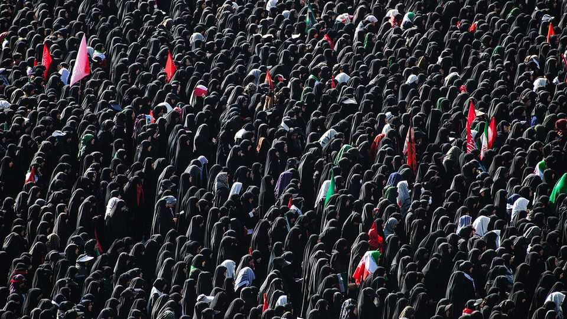

Is Donald Trump serious in declaring the ceasefire with Iran over?
Iran’s ultra-nationalist new leaders may welcome his bluster
July 9th 2026

It was less a traditional lament for a slain Shia holy man than a victory parade, a display of power and a rallying cry for another confrontation with America. Over six days, Iranians marked the funeral of Ayatollah Ali Khamenei, Iran’s former supreme leader, by chanting “Death to America”. Red flags of vengeance fluttered above the crowds. Mourners hurled stones at images of Donald Trump and hung effigies of America’s president.
Then, on the third and fourth days of mourning, the Islamic Revolutionary Guard Corps (irgc), the regime’s elite defenders, launched drone attacks on three tankers that they claimed had ignored their designated route through the Strait of Hormuz. If the generals meant to provoke Mr Trump, they seemed to succeed. On July 7th he ordered strikes on Iran and revoked the sanctions waiver covering Iran’s oil exports. “Scum,” he called Iran’s rulers at a nato summit in Ankara on July 8th. “It’s just a waste of time dealing with them.” Perhaps, the president suggested, America could do without a deal and simply hit Iran “hard” again.
America carried out dozens of strikes in southern Iran overnight on July 7th, and again on July 8th. Even so, Mr Trump’s words may be bluster. American and Iranian negotiators are still expected to resume talks on July 11th in Islamabad, Pakistan’s capital, over a final agreement about Iran’s nuclear programme. But both sides look belligerent. The leadership that has emerged in Iran since Khamenei’s death seems keener to project strength and wear down Mr Trump through military pressure, rather than diplomacy.
Iran responded to both sets of American strikes with attacks on Bahrain and Kuwait. The oil price reached $80 a barrel early on July 9th; Iran’s rial slipped. Observers again predicted Iran could stomach more economic pain than the global economy. “We don’t fold,” posted Iran’s chief negotiator and parliamentary speaker, Mohammad Bagher Ghalibaf, on July 8th.
The funeral offered an early glimpse of the new configuration ruling Iran and what some Iranians now call a second republic. Gone were the traditional rites that marked the burial of Ayatollah Ruhollah Khomeini, the Islamic Republic’s founder, in 1989. His body was hurried to its grave, three days after his death, wrapped in a simple white shroud. By contrast, officials spent 126 days preparing for Khamenei’s final rites, which they claimed was the largest state funeral in history. His coffin travelled for six days over 2,600km, across five cities and two countries, including Iraq.
The ceremony also revealed a shift in the regime’s centre of gravity. The irgc generals who directed the war occupied pride of place. Iranian flags dominated the stage and draped the coffins. Khamenei’s black turban—a symbol of the clerical establishment he led for 37 years—rested almost inconspicuously on top. More than 100 days after assuming power, his son and successor, Mojtaba Khamenei, has still not appeared in public. Even if he eventually does, he may prove little more than a figurehead. His televised statements sound like military communiqués, not sermons. Along the funeral route, guards units and allied Iraqi militias marshalled the crowds and distributed food and water. Iran’s rulers appear to be burying not only their supreme leader but also the clerical order over which he presided.
Khamenei’s killing has accelerated Iran’s transition from a theocracy to an ambitious nationalistic state dominated by military men. The irgc appears to wield power with few constraints. Clerics who challenged its influence—including former Presidents Mohammad Khatami and Hassan Rouhani—were conspicuously absent from the processions.
The generals, meanwhile, are asserting their regional power. As Iraq’s prime minister, Ali al-Zaidi, prepared to curb pro-Iranian militias and for his first official trip to America, they directed Khamenei’s funeral procession through Iraq’s holy cities and lined its roads with armed groups. Free transport, food and lodgings, together with respect for Iran’s success in repelling a foreign attack, drew vast crowds. Many Iraqis who once resented Iranian meddling now curse America and Israel.
Iran’s bullying of its neighbours in the Gulf has also resumed. Delegations from Saudi Arabia and other Arab states travelled to Tehran to offer condolences despite enduring thousands of Iranian strikes during the war. Their gestures went unrewarded: more Iranian strikes have since followed. Gulf officials shrink at the determination of Tehran’s new leadership to control the Strait of Hormuz. One of them mused that it smacked of a return of imperial Persian ambition.
Two forces could yet restrain Iran’s generals. The first is military reality. America’s latest strikes underline the possibility that the war could resume in earnest. Iran’s Gulf neighbours, meanwhile, appear more willing to support a tougher American approach. They are pressing partners in Europe and China to increase pressure on Tehran while quietly highlighting both their previous covert operations against Iran and their willingness to act again.
The second is economic. Once the funeral crowds disperse, Iran will still face a fragile and isolated economy. Sanctions-busting smuggling networks can sustain the regime, but not the wider population. Perhaps 40% of Iranians live in poverty, probably more. Much of the middle class has disappeared, while the war has pulverised the country’s industrial base and left millions jobless. Most Iranians yearn for economic recovery and relief from sanctions rather than the reimposition of America’s naval blockade and more war. National renewal will require some accommodation with Iran’s enemies, not merely more bombs and bombast. ■